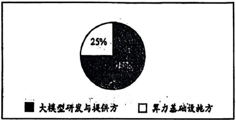

真题 · 非连续文本阅读
词元与知识服务
区分模型服务的计量、实际效用和收益分配，结合材料读取利润分配图。
导读
文体与题材：非连续文本阅读材料。
文本出处：2026年高考天津卷第4—6题。材料一取材于钟时、袁军的相关文章，材料二取材于陈波的相关文章。
内容脉络：材料一由知识的计量困难引出词元及其在模型交互中的作用。材料二借餐厅设喻，提出生产、分配和定价三个问题。
内容主旨：词元为大模型服务提供可计量单位。单位消耗、输出效用和收益分配各有判断依据。
阅读重点：区分测量对象和用途，检验类比的适用范围，并分清图表呈现的利润份额与成本投入。
原文
原文按结构分节；随文内容可定位至对应段落。
材料一：从知识计量的困难引出模型交互的计量单位。
关于知识在人脑中如何被利用，人们始终面临一个根本困境——不可观测和计量。一个人学习、思考、产生灵感的过程，就像一场发生在大脑里的“思想风暴”，谁也无法测量这场“风暴”的强度。我们一直缺乏一个工具，像衡量一吨钢铁或一小时劳动那样，去衡量“知识”这种特殊的生产要素，究竟是如何直接参与价值创造的。
人工智能时代，出现了突破这个难题的契机。作为一种特殊的数据类型、生产要素，词元像一位“翻译员”，在人类语言和机器数字之间搭起桥梁。所有“喂”给人工智能的数据，都需要先按规则切分成独立的词元，转换成数字编码，然后被人工智能识别。比如你输入“春节包饺子！”，人工智能会切分为“春节”“包”“饺子”“！”四个词元。我们与大模型交互，无论是提问还是得到回答，本质上都是词元的输入和输出。用户输入的每一个字，模型生成的每一段话、识别的每一幅图像，都在消耗词元。依据大模型一次完整交互所消耗的输入和输出词元总数，我们可以大致衡量这次“知识服务”的规模。
材料二：以智慧餐厅说明模型、算力与用户指令的配合。
想象一家全自动的智慧餐厅，它拥有顶级厨房设备（算力）和掌握全球食谱的厨师（大模型）。但“你”想吃饭，必须亲自告诉它采用哪些食材、何种口味（用户指令，即“提示”），没有“你”的指令，再好的厨师也是摆设。
这家智慧餐厅与传统餐厅有根本不同。在传统餐厅，厨师是明确受雇的员工，他根据固定菜单做饭并领取工资。在智慧餐厅中，制定今日菜单、改良菜品的“你”，并不是这家“餐厅”的员工，利润也与“你”无关。而正是全球数亿用户每时每刻的、无偿的“点菜”行为，在不断训练和优化着这家餐厅的“厨艺”（大模型能力）。
在词元的生产中，情况与此惊人地相似。这引发了关于生产、分配和价格决定机制的核心疑问：
三项疑问：分别考察提示的性质、价值分配和计价依据。
问题二：所有劳动参与分配了吗？词元的最终价值，由“大模型能力”“算力执行”“用户指令”共同创造。是不是所有的劳动或要素都参与了最终的分配？在当前的商业模式下，用户进行“提示”所付出的隐性劳动，其创造的价值是被如何分配的？大模型开发的一次性天价投入，和词元生成时用户消耗的那一点即时电费，巨大的成本差异是否有重塑财富创造和分配的逻辑的可能？
问题三：词元的价格由什么决定？如果这家“智慧餐厅”宣布每一道“菜”的“加工费”固定为100元，但端上来的“菜”，可能是“拍黄瓜”，也可能是一份足以让公司起死回生的商业计划书。这100元定价合理吗？这就是词元在定价上面临的根本矛盾。词元定价如同“加工费”，标准计量，明码标价；但其实际效用的价值完全由结果决定，这就导致了价格决定机制方面的诸多问题。
出处
材料一取材于钟时、袁军的相关文章。材料二取材于陈波的相关文章。
第1题 · 材料理解
根据两则材料，下列理解正确的一项是
A．材料一从知识计量的困境切入，引出词元概念，呈现出“提出问题—分析问题—解决问题”的行文思路。
B．词元的出现，突破了“知识在人脑中如何被利用”的难题。
C．词元需转换成数字编码，再“喂”给人工智能，从而搭起沟通的桥梁。
D．词元在定价机制上的根本矛盾在于其价格与实际效用价值脱节。
参考答案1展开 / 收起
参考作答
D。
审题与考查点
比较选项概括的范围、论述进展和术语的指向。
文本分析
A项查看证据 ↗
开头和引入词元的概括成立。结尾只说可大致衡量模型知识服务规模，开头的人脑知识活动如何精确计量仍未解决。
B项查看证据 ↗
作者写的是出现突破难题的契机。词元总数刻画的是模型交互的规模，从中无法得出人脑知识运用已经可测。
C项查看证据 ↗
材料以供给模型的数据为切分对象，明确说切分、编码后由模型识别。选项把已切分的词元当作原文所说“喂”入的对象，混淆了原始输入与内部处理。
D项查看证据 ↗
加工费相同，交付结果的效用可能相差很大。原文用这组差异说明统一计量的价格与依结果而定的实际效用之间有张力。
知识点
文本证据与阅读推论要求限定被比较的对象与结论范围。
解题方法
圈出“人脑”“模型交互”两个不同对象，再分别核验材料对二者作出的判断。
易误辨析
不要把“出现契机”读作“已经解决”，也不宜把原文语境中的“喂”直接当作内部处理的术语。
答案组织与检核
核对正确项是否完整对应原文的两项变量及其关系。
第2题 · 图表判读
调研小组为某公司绘制了“利润分配比例图”。结合材料二，下列对该图的理解和分析，不正确的一项是

A．该图印证了用户在“智慧餐厅”的“点菜”行为是一种无偿劳动。
B．大模型研发与提供方的利润占比为75%，说明培养“顶级厨师”需要高投入。
C．该图无法确定算力基础设施方在投入上只占创造词元价值全部成本的25%。
D．该图有助于认识“要素投入”与“价值分配”相错位的现象。
参考答案2展开 / 收起
参考作答
B。
审题与考查点
图表只统计某一公司的利润如何分配。结合材料时要区分图表可单独证明的事实与图文相互补充所得的判断。
文本分析
A项查看证据 ↗
图中没有用户的利润份额，与餐厅类比中点菜者不参与分配相呼应。该图支持“在图示分配中未取得利润份额”这一层，单凭它无法认定提示在法律或经济学意义上属于有偿或无偿劳动。
B项查看证据 ↗
75%是大模型研发与提供方获得的利润份额。材料对研发投入另有说明，但图中没有研发成本，因此占比无法证明培养所需投入的大小。
C项查看证据 ↗
图中25%指算力基础设施方的利润份额。若要知道其成本占比，还需要各种要素的成本数据。
D项查看证据 ↗
材料列出共同创造价值的三项要素，图中只列两类利润取得者。结合起来可以具体讨论参与创造与参与分配的不同范围。
知识点
阅读统计图先辨指标、对象和对应的百分比，再判断推论需要哪些额外数据。
解题方法
把图例与材料的三个要素逐项对应，再问每个选项讨论的是成本、利润还是劳动属性。
易误辨析
A项须依题干“结合材料二”理解，图中分配结果本身无法确立劳动性质。B项直接用利润比例反推投入大小，缺少必要数据。
答案组织与检核
写出指标的全称，避免脱离“利润”只说“占比”。
第3题 · 推断判断
根据两则材料，以下推断合理的一项是
A．短期内我们仍无法计算一位科学家提出新理论过程中的知识运用总量。
B．大模型通过接受用户的所有“指令”来提升能力，创造更高的价值和利润。
C．在不久的将来，用户给大模型“提示”，会获得相应的劳动报酬。
D．随着人工智能的不断发展，词元生产和价值分配的核心矛盾会被解决。
参考答案3展开 / 收起
参考作答
A。
审题与考查点
考查结论能否由两则材料推出，重点核验适用范围、条件与预测语气。
文本分析
A项查看证据 ↗
材料没有提供直接计量人脑知识活动的手段。模型的词元计量适用于交互服务，因此不能据此计算科学家形成新理论时在头脑中动用的知识总量。
B项查看证据 ↗
类比说用户参与可训练和优化模型，无法由此推出每一条指令都起此作用，更不能保证从能力改善到利润提高。
C项查看证据 ↗
材料提出是否属于劳动以及怎样分配的疑问，未提供形成报酬制度的条件、时间和证据。
D项查看证据 ↗
材料把生产、分配、定价作为机制层面的问题。技术发展和制度改变之间缺少必要推论条件，故不能预言核心矛盾会得到解决。
知识点
阅读含有预测的选项时，用论证与证据检查语气与推论范围。
解题方法
先划定材料说明的现状，标出全称词和未来时点，再检查有无支持该扩展的前提。
易误辨析
技术能力、使用价值与利润是不同变量。一个变量变化，不能代替另外两个变量的证据。
答案组织与检核
以最少的假设重述推断，核验是否超出文本给出的范围。
研习关联
参考文献
天津市教育招生考试院，2026年天津高考语文试卷评析。